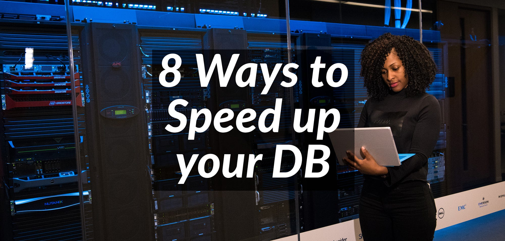
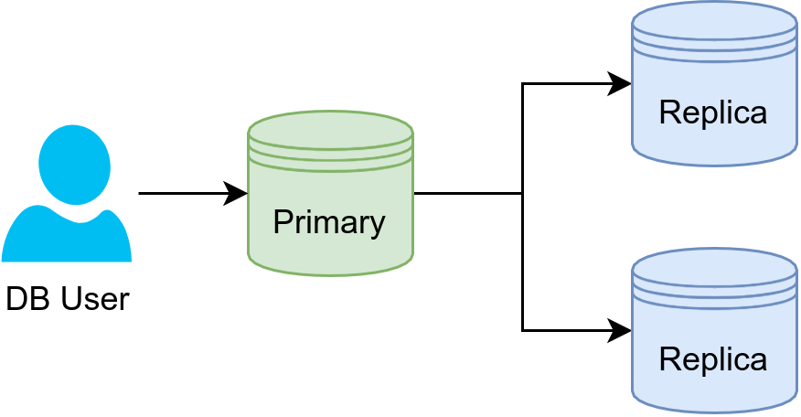
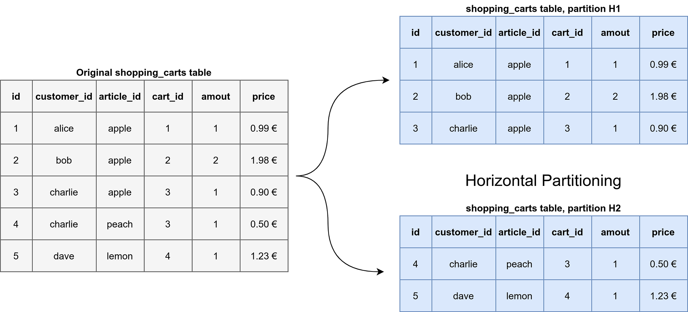
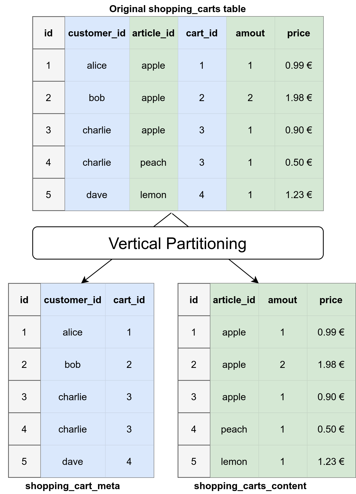
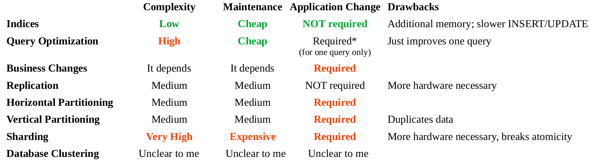

Photo by Christina Morillo (original). Thank you!Almost all web services for end-users have the need to store data. Almost all of them store them in a database. And quite a lot use a relational database like PostgreSQL, MySQL/MariaDB, or MSSQL. Database systems are pretty awesome because you can forget about them. They just handle the data persistence for you… until they get slow.
In this article, you will learn the difference between vertical and horizontal partitioning, sharding, replication, and a few other ways to speed up your database. Let’s go!
What Do We Care About?
For database systems, we care a lot about consistency and availability. We also need a working solution for exchanging broken equipment and continuous backups.
Once the minimum requirements are fulfilled, we might have several performance metrics:
- Read performance for simple queries
- Read performance for complex queries
- Insert / update performance
The workloads of different applications differ in important ways. Many web applications only use CRUD and, once in a while, very simple JOINs. They need fast reads and relatively fast writes. They have a big amount of small transactions. They have an OLTP-style workload.
Analytics teams in contrast need far more complex queries. It is also acceptable if those queries take more time. They have a small amount of complex select queries. They have an OLAP-style workload.
One tool to find single slow queries is logging slow queries (MySQL, PostgreSQL, MSSQL).
Algorithmic Improvements
The code that runs in production is, in many cases, just the first thing that happened to work. For non-developers, think about the last few emails you’ve written. Very likely, there was at least one where you didn’t spend too much time to improve the way you communicate. It’s the same story with code. In good companies, at least a second person had a quick glance at the code. But when it looks reasonable, we developers will not go into detail over every single line. This means there will always be room for improvement.
For databases, there are two common ways to improve: Adding reasonable indices and query optimization.
1. Indices
Indices allow the database to find relevant rows quicker by maintaining an efficient search data structure (e.g., a B-Tree). This is done per table. Adding an index can be computationally expensive and has to be executed on the production system, so it’s typically done infrequently.
Creating an index is easy via SQL (MySQL, PostgreSQL):
CREATE INDEX arbitrary_index_name
ON your_table_name
(column1, column2);
Adding an index can speed up searches in the database, but slows down UPDATE / INSERT / DELETE statements, except if the “WHERE” part is costing a lot of time.
2. Query Optimization
Query optimization is done by the database user per query. Queries can be written in several different ways, and some of them can be more efficient than others. You might want to try different query versions on your data and use the explain statement. A nice article about query optimization can be found here: Query optimization techniques in SQL Server: tips and tricks June 19, 2018 by Fixing bad queries and resolving performance problems can involve hours (or days) of research and…www.sqlshack.com
One tool to mention is sqlcheck (video). It checks for common SQL query antipatterns like having multiple values in one column instead of using an intersection table or wildcard selects.
A slightly different sub-category of the query optimization topic is the n+1 problem / writing a loop to send multiple queries instead of having one query for the data.
3. Business Changes and Partitioning
When you’re growing a business, you want to please your clients. If they ask for a small new feature, you try to include it. This can lead to feature-creep. The UNIX philosophy indicates that this was a problem already quite a while ago:
“Write programs that do one thing and do it well.” — Doug McIlroy
Similarly, it might be OK to split your web service's data by user groups. Maybe it makes sense to split them into regions? I’ve seen that at AWS and Secure Code Warrior. Maybe you can split it into “Private clients,” “Small business clients,” or “Large Business clients”? Maybe one part of the application can actually be its own service with its own database?
4. Replication

Image by Martin ThomaReplication is an easy solution if reads are your problem and if a bit of time-delay of updates is not a big deal. Replication continuously copies the database to another machine. It speeds up reads and acts as a failover mechanism.
The idea is to have one primary server and multiple replication servers, which were formerly known under other names. The primary server handles any changes of data, while the replication servers just duplicate the primary server. There are other topologies, e.g., a ring or a star setup.
See also: MySQL docs, PostgreSQL docs, MSSQL docs
5. Horizontal Partitioning
Given a huge table, we could store some rows on one machine and others on another machine. The idea to split the data by row is called horizontal partitioning.
An image explains more than many words:

Conceptual example for horizontal partitioning. Image by Martin Thoma.Partitioning simply by id works like this in MySQL / MariaDB:
ALTER TABLE
shopping_carts
PARTITION BY RANGE(id)
(
Partition p0 VALUES LESS THAN (1234),
Partition p1 VALUES LESS THAN (4567),
Partition p2 VALUES LESS THAN MAXVALUE
);
You want the user of the database system to still be able to query the database with the typical queries, perhaps using the following:
SELECT * FROM shopping_carts WHERE id = 3
One important thing to note here: Horizontal partitioning is completely unrelated to scaling horizontally!
6. Vertical Partitioning
Instead of dividing the big database based on rows, we can divide it by columns. This might give you an uneasy feeling because you’ve learned at university that normalizing a database is a good idea. The important thing to notice here is that we are talking about different stages in the database design. The various database normal forms are related to the logical design. At this stage, we take care of the physical design.
Different parts of the application might not need most columns of a row. For this reason, it can be OK to split them away. Hence vertical partitioning is also called row splitting.
One commonly done practice is to split metadata from the content. Here’s an image:

Image by Martin ThomaOne important thing to note here: Vertical partitioning is completely unrelated to scaling vertically!
Vertical partitioning can be useful when it helps you avoid privacy or regulatory issues. Think of credit card information. That could logically fit well with other information, but most of the application does not need it. You might even put it in a completely different database and hide it behind a private microservice.
7. Sharding — Taking Partitioning To the Next Level
You have seen that the data can be grouped in two different ways. It might already make sense to partition the data on the same machine to help the database execute common queries faster. But if the database is maxing out the CPU or RAM, it might make sense to use different machines.
Sharding is partitioning a single logical dataset and distributing it over different machines.
As you might guess, this comes with a huge amount of issues — and thus should only be your last way out. For example, Foursquare was down for 11 hours due to a sharding issue in October 2010 (source). I’ve been lucky so far that I didn’t have to deal with sharding.
The first obvious issue is that your application needs to know which shard contains the data you’re looking for. Hence your application logic is affected, potentially in all places.
A second big problem is JOINs across shards.
The third problem is how shards are defined. To be truly scalable, you want to make a dynamic definition of the shards. Having a hierarchical structure can help to achieve this.
If you still want to read more about sharding, I recommend the awesome article by Jeeyoung Kim: How Sharding Works This is a continuation of the last blog post, why I love databases.medium.com
This article by Digital Ocean is also very nice: Understanding Database Sharding | DigitalOcean Sharded databases have been receiving lots of attention in recent years, but many don't have a clear understanding of…www.digitalocean.com
8. Database Clustering
I only came across this term when looking at Vitess. The idea seems to be to hide the issues of sharding by, also, using replication under the hood:
There is documentation for PostgreSQL as well and MySQL Cluster is another product.
Bonus: Query Caching
If you have some heavy queries which act on data that rarely changes, you could try to cache the query. I’m uncertain what databases offer by default, but you could simply put a Key-Value Store in place for that query. Instead of sending your query to the database directly, you send it to a microservice that looks for it in the Key-Value store. If it’s not there or it’s invalid, it queries the real database.
The drawback is that you don’t know if the data you get is the most recent one.
Let’s Summarize!

What’s next?
Some topics are crucial for development, but not part of day-to-day work or computer science curriculum. In our professional software development series, you can learn about more topics.
I am thinking about adding articles of this kind, so please let me know what you’re interested in:
- Team Building
- Code Reviews
- Code Deployment: A basic Docker article already exists, but there is way more to write about this topic
- Infrastructure as Code (IaC)
- Monitoring and Alerting